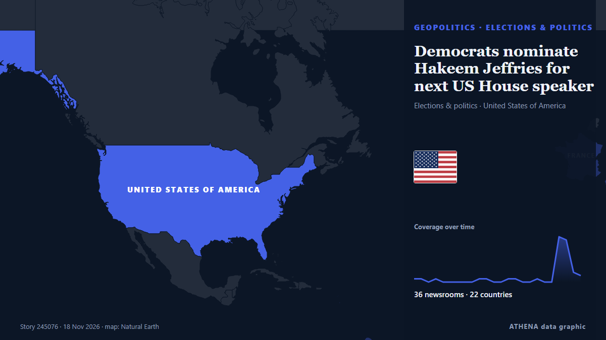

ATHENA Glaux Intelligence — Global news intelligence — every number explained
Every headline, checked across countries.
ATHENA Glaux reads 634 news outlets worldwide. A story becomes a verified event only when independent outlets report it. Each event shows who was first and a risk score with its reasons.
Reports drift in from independent outlets - when two meet on the same story, it becomes a verified event.
How ATHENA checks a story
- CollectReports arrive from independent outlets in many countries.
- MatchWhen two outlets meet on the same story, it becomes a verified event.
- ExplainEach event shows who was first, how far it spread and why the risk is what it is.

GeopoliticsDemocrats nominate Hakeem Jeffries for next US House speaker
Democrats elected this month to the US House of Representatives nominated Hakeem Jeffries on Wednesday to lead them in the next Congress, putting him on the precipice of becoming the nation’s first… from Cyprus Mail
Anthropic prices blockbuster IPO at $83 a share, source says
Anthropic priced its initial public offering at $83 a share, above its targeted range of $70 to $78 per share on Wednesday, in one of the largest stock-market IPOs on record and the first by a major… from Business Recorder
Russian national accused of spying on employees of Silicon Valley defense and technology company
A Russian man who prosecutors say was recruited by his government has been charged with stalking employees of a Silicon Valley technology and defense company in order to gather intelligence, the… from The Canadian Press (via CityNews)

Ships at the world's chokepoints now
Live AIS counts. Tap or hover a bar for the detail.
US hits out at Ukraine’s ‘deep strikes’ against Russia
US defence official Elbridge Colby said support for Kyiv should be focused on bolstering the front line. from The Straits Times
Widespread outages hit banks, air travel, the NSA and Apple, disrupting seemingly everything
Major outages showcase the risks of interconnected tech in the age of AI. from CNBC World
Anthropic prices IPO at $83 a share, above projected range
The long-awaited IPO reportedly values the company at $1.5 trillion on a fully diluted basis. from TechCrunch
Geopolitics, Politics & Security
More ›Musk says he felt ‘pretty foolish’ about scale of midterm spending after Republican rout
Nov 18 (Reuters) - Elon Musk said on Wednesday he felt "pretty foolish" about the amount of money he spent on this year's US midterm elections after Republicans suffered sweeping losses. from Daily Maverick
- Wars & conflicts
Saudi-led coalition says it intercepted Houthi cruise missile targeting Riyadh
- Diplomacy & summits
Xi and Putin meet at APEC summit ahead of trilateral talks with Trump
- Wars & conflicts
Israel begins new military operation in Gaza
- Elections & politics
Spanish PM seeks election boost as Brazil's Lula visits
Economics, Finance & Markets
More ›Yen holds steady under 160.00 as Japan inflation data nears
The Dollar rose against most major currencies but not the Yen, which is backed by intervention warnings near 160.00 and an expected Bank of Japan (BoJ) hike. from FXStreet
- Crypto & digital assets
After $6.3 billion crypto heist, Binance plans Asia expansion
- Inflation & interest rates
BI assures rate hike will not derail Indonesia economic growth
- Banking & credit
US DOE grants $2.8bn conditional loan for Wyoming grid project
- Jobs & wages
Police in Bangladesh clash with garment workers demanding higher minimum wages
Trade, Industry & Infrastructure
More ›Crimean Bridge comes under another attack by Ukrainian troops
Ukrainian sources say the 17 November operation involved missiles, drones and several military units, demonstrating Ukraine's ability to carry out precision strikes without relying on Starlink or… from Ukrainska Pravda (English)
- Construction & infrastructure
Crimean Bridge Shut After Ukrainian Strike as Russia Claims Record 1,336 Drones Downed
- Shipping & ports
VARD and partners receive funding to Advanced Nuclear Propulsion for Ships
- Supply chains & logistics
57% of organisations expect AI to make more than a quarter of warehouse operational decisions autonomously by 2028, MIT CTL–Mecalux study finds
- Shipping & ports
Everllence secures first order for methane dual-fuel 8S50ME-GI Mk10.7 engine
Energy, Resources & Environment
More ›HD Hyundai Heavy wins $203.6 mil. order for 4 LPG carriers
HD Hyundai Heavy Industries said Monday it has secured a 272.1 billion-won ($203.6 million) contract to build four liquefied petroleum gas (LPG) carriers. from The Korea Times
- Oil & gas
ExxonMobil begins oil production at Uaru in Guyana’s Stabroek block
- Climate & climate policy
Bangladesh needs COP31 to deliver clarity on climate finance
- Climate & climate policy
Albanese appears in photo with Putin but has warning for Russia
- Climate & climate policy
PACNEWS TWO, 19 NOVEMBER 2026
Technology, AI & Cybersecurity
More ›Grand Theft Auto VI released as gamers rejoice globally
After 13 years of waiting, fans around the world will get to play the latest installment in the blockbuster video game series. from DW English
- Space & satellites
GTA 6 Launch Highlights: India Gets Blockbuster Game After 13-Year Wait
- Space & satellites
Musk accuses Ukraine’s Zelensky of lying about Starlink
- Chips & computing
China's military seeks Nvidia chips as US tightens export curbs
- Telecoms & networks
NTT, ispace forge alliance for Earth-to-Moon connectivity
Business, Companies & Investment
More ›Experts hail China's APEC hosting as boost to innovation, cooperation
Media OutReach Newswire - 18 November 2026 - China is hosting the APEC summit for the third time, having previously hosted it in Shanghai and Beijing. from Slovenia Times
- Bankruptcies & restructuring
Trump Administration Unveils Project to Combat Cybercrime
- Corporate strategy
GTA 6 launches after 13-year wait, breaking pre-order records
- Startups & innovation
Xi calls for jointly building Asia-Pacific community to prosper together
- Corporate strategy
Google ‘rejects Government’s request to remove Russell Brand video from YouTube’
Accidents & emergencies
More ›Doctors amputate weightlifter Hafizuddin's right arm after crash
KUALA LUMPUR: National weightlifter Hafizuddin Roslin had his right arm amputated on Tuesday after sustaining serious injuries in a motorcycle accident on Monday night. from New Straits Times
- Accidents & emergencies
Bayesian crew unaware of safety risk before deadly sinking, British report finds
- Accidents & emergencies
M5 blocked near Clevedon as police respond to incident
- Accidents & emergencies
US Central Command denies reports of personnel injured in Iranian attacks
- Accidents & emergencies
Trump abandons his FDA nominee, and Senate scraps vote on his NSF pick
Three ways to read today
Start with the one that fits your timeVerified events
Ranked by how widely they are reported
- Nvidia faces a new threat after Jensen Huang's ouster: Losing its best engineers142 outlets · 46 countriesRisk 4.5
- China's Xi to host historic summit with Trump, Putin78 outlets · 42 countriesRisk 5.9
- Tanker hit by unknown projectile near Strait of Hormuz, UK maritime agency says99 outlets · 39 countriesRisk 4.6
- Robert Pattinson’s James Bond Casting Causes Some 007 Fan Backlash94 outlets · 38 countriesRisk 3.1
- Trump’s honeymoon with South Korea is over71 outlets · 31 countriesRisk 3.5
Analysis Desk
Ask a question and read a reasoned assessment of a leading story, with what would prove it wrong.
Open the Analysis Desk ›Today in numbers
| 07:00 | 681 |
|---|---|
| 08:00 | 513 |
| 09:00 | 688 |
| 10:00 | 652 |
| 11:00 | 593 |
| 12:00 | 452 |
| 13:00 | 499 |
| 14:00 | 732 |
| 15:00 | 751 |
| 16:00 | 619 |
| 17:00 | 503 |
| 18:00 | 869 |
| 19:00 | 744 |
| 20:00 | 578 |
| 21:00 | 497 |
| 22:00 | 549 |
| 23:00 | 485 |
| 00:00 | 599 |
| 01:00 | 467 |
| 02:00 | 442 |
| 03:00 | 304 |
| 04:00 | 368 |
| 05:00 | 586 |
| 06:00 | 583 |
Risk of today's events
Emerging signals
- Sudden surge · Active nowNicolás Maduro
- New name in the news · Active nowDealBook Summit
- Sudden surge · Active nowYellow Line
- Sudden surge · Active nowGTA VI
- Sudden surge · Active nowRohingya
Stay informed
ATHENA Weekly Risk Picture
The week's biggest geopolitical, economic and shipping risks, cross-checked and scored.
Every Friday at 08:00 Athens time · free · in English
Subscribe freeATHENA on Telegram
News the moment it is published: breaking events at risk 6 or more, an hourly round-up, risk-tracker updates and the daily briefing at 10:00.
Free · posts in English · leave at any time
Join the channelSign-up is handled by beehiiv with double opt-in: nothing you type is sent to ATHENA, and every issue has an unsubscribe link.
Risk trackers
More ›Global risk outlook — week 47, 2026 (16–22 Nov) ›